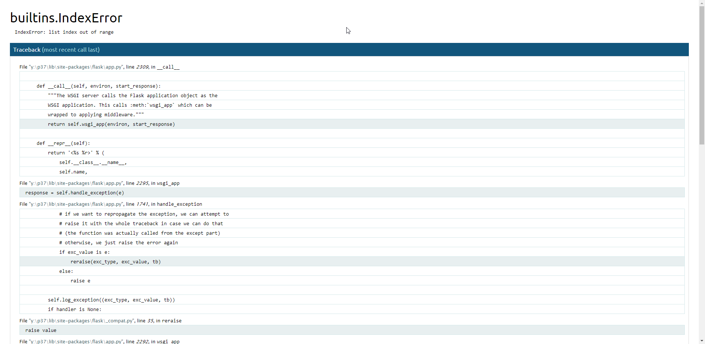

今天在Edit ALL部分做了大量的更改(w1-w7)，然後一併儲存，結果發生以下狀況

圖片內顯示builtins.IndexError，代表可能內容影片有重複部分，但我重做了一次(相同內容、相同步驟)，也發生一樣的事情，後來第二次重做時我選擇一部份一部份推上雲端，這邊內容一樣相同未做變更，但這次就發現網頁不會有問題
*事件：
全部編輯完按下"Save">網頁掛掉。
clone雲端版本>覆蓋>重複上次動作(順便檢查"相似"衝突)>檢查無相似>網頁掛掉。
clone雲端版本>覆蓋>重複上次動作>一階段一階段commit、push>Save>發現無問題。
*結論：
我發現是否一次大量更改後儲存會造成網頁掛掉問題，我分批儲存上傳後就無此問題
這部分需再探討。
-----------------------------------------------------------------------------------------
這裡發現git add .這指令，如果使用大寫的話會造成當機不動
後使用ctr+c取消改小寫才能解決這問題